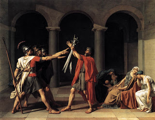

Dark Helmet, evil ruler of the Spaceballs: Before you die, Lone Star, there is something you should know about us.
Lone Star, intrepid if thick-headed space hero: What?
Dark Helmet (with triumphant menace): I ... am your father's, brother's, nephew's, cousin's former roommate.
Lone Star (puzzled): What's that make us?
Dark Helmet (after a beat): Absolutely nothing.
From the climactic battle sequence in Mel Brooks' 1987 satirical space epic, Spaceballs.
The tenuous, gossamer link of distant association described by Dark Helmet works as a piece of throw-away satirical comedy. Under the doctrine of collective guilt being promoted by our would-be cultural commissars, that relationship would also be sufficient to serve as a "link" connecting Lone Star to the crimes committed by Dark Helmet.

Partisan hack and hypocritical ideologue: During the reign of Bush the Lesser, Keith Olbermann routinely -- and properly -- condemned the Regime for inflating the threat of Islamic terrorism. Now he's leading the chorus of alarm regarding the supposed threat of domestic "right-wing" terrorism.
Lest it be thought that I'm exaggerating, consider Keith Olbermann's effort to connect Ron Paul -- a man devoted to peace and protecting the individual rights of everybody, a man who seems biologically incapable of malice -- to James von Brunn, the troubled 88-year-old man accused of carrying out the murderous shooting rampage at the Holocaust Museum.
Olbermann, who looks like one of Eugene Levy's SCTV caricatures and (to my disappointment) appears to have the soul of an East German prosecutor, grimly informed his viewing audience that "von Brunn switched his website domain on May 1 to a man who shares a phone number with a woman who was listed as the Michigan coordinator for former presidential candidate Ron Paul."

What does that make the actual relationship between von Brunn and Dr. Paul?
As Dark Helmet would say: Absolutely nothing.
But this is a "link," or at least can be forged into one by people whose reserves of silliness and dishonesty are adequate to that task, and Olbermann -- who, like most pathologically self-important asses, has an apparently bottomless supply of silliness -- easily qualifies.
A theory of collective guilt easily as silly as Olbermann's dribbled down the chin -- or at least oozed from the fingertips -- of David Neiwert, a former professional associate of the degenerate fraud and racial ambulance chaser Morris Dees.
Niewert is author of the recent book The Eliminationists: How Hate Talk Radicalized the American Right. For the most part a porridge of self-contradictory partisan talking points, Neiwert's book does offer the occasional useful disclosure.
For example, Neiwert points out (pg. 126) that during its revival in the early decades of the 20th century, the Ku Klux Klan acted as "an auxiliary police outfit" to enforce laws against bootlegging -- which is to say that the Klan acted as government sub-contractors in carrying out the deranged policy of Prohibition. There's a potent seed of an important realization here regarding the role of the state in cultivating hate groups. Regrettably, that seed requires fertile soil in which to flourish, and where such uncomfortable thoughts are concerned, Neiwert's mind is barren and rocky ground.
Similarly, Neiwert provides a well-researched and detailed chapter on "Eliminationism in America" (no, it's not devoted to matters of digestive tract health) which deals with the long and tragic history of the State's war against the Indians, as well as other forms of State-enforced racial discrimination.
In that survey the author takes due notice of the depredations carried out against the Plains Indians by Union "war heroes" like Phil Sheridan and William Sherman. He then he spends the rest of the book excoriating "neo-Confederates." That category presumably includes anyone who recalls with horror the eliminationist campaigns against the Shenandoah Valley and civilian populations in Georgia as a prelude to the crimes committed against the Indians.
One of the most useful passages in Neiwert's book (see pages 97-98) is a critical treatment of the embittered, authoritarian nationalism that passes for contemporary conservatism.

What is "conservative," asks Neiwert, about permitting "torture, rape, and the killing of civilians under the guise of interrogating prisoners in the nation we now occupy as a result of the Bush Doctrine?... Is it conservative to issue hundreds of `signing statements' that place the president outside congressional purview and above the law? To blatantly flout federal surveillance laws nad proceed with the wiretapping of thousands of American citizens?" Is "conservatism" defined entirely by support for aggressive war abroad and presidential dictatorship abroad?
Movement conservatism, Neiwert concludes, "has come to resemble nothing genuinely conservative at all but rather something starkly radical: profligate spending and economic recklessness; incautious and expansionary wars, pursued unilaterally; exaltation of religious fervor and assaults on science; and the undermining of the civil rights of minorities."
Although this is an incomplete and flawed summation, it's a good place to begin in discussing the dangers of contemporary conservatism, as opposed to the genuine article.
That being the case, why does Neiwert go out of his way to implicate Ron Paul, who -- by Neiwert's analysis -- would appear to be the only genuine conservative of any stature within the GOP?
In his book Neiwert accused Dr. Paul of helping to "mainstream" the ideas of the "Radical Right" -- the same ideas, he insists on the same page (136, for those who are interested), that propelled "the rampages of Eric Rudolph, Buford Furrow, and ... Jim David Adkisson." This is because Ron Paul's presidential campaign promoted what Neiwert dismisses as "classical Patriot monetary and taxation theories" -- that is, an understanding of the need for hard money (gold and silver) and of the destructive influence of the Federal Reserve on our economic and social health as a country.
(Neiwert carefully avoided mentioning Dr. Paul's emphatic and courageous stand against the Iraq War and the demented policy of "pre-emption," including nuclear aggression against "rogue" countries. He likewise omitted mention of Dr. Paul's eagerness to work with congressional Democrats -- such as Dennis Kucinich and Barney Frank -- on issues of common interest where this was compatible with his principles. Oversights of this sort attest to an abundance of bad faith on Neiwert's part.)
Like a dog returning to its vomit, Neiwert returned to this smear against Dr. Paul in the wake of the Holocaust Museum shooting. Noting that von Brunn was arrested for attempting either a "citizen's arrest" or kidnapping (depending on your perspective) ofPaul Volcker at the Federal Reserve Building in Washington, Neiwert wove a tangled skein of guilt-by-astronomically distant association:
"Von Brunn ... was an adherent of the white-supremacist/far-right movement called Posse Comitatus, and was acting on those beliefs. More to the point, this is precisely the same belief system that today fuels the cottage industry in conspiracy theories -- promulgated by the likes of Ron Paul and Alex Jones -- that the Fed is part of a massive conspiracy of `international [read: Jewish] bankers' to enslave Americans and destroy the country. It's been around quite awhile, but lately it's been gaining the patina of being regurgitated for mainstream consumption on right-wing media. "
Leaving aside the unappetizing mental image of a "patina" that is acquired through regurgitation, Neiwert's argument -- if that word can be tortured into applying here -- is a crude and dishonest syllogism: The anti-Semite James von Brunn opposed the Federal Reserve; Ron Paul and many others oppose the Federal Reserve; therefore, opponents of the Federal Reserve are anti-Semites.
Thus, any time you hear someone unbosom himself of sentiments like the following, you can know that you're in the presence of a certifiable Right-Wing nutbar, a "Lone Wolf" terrorist just waiting the trigger word to go on an anti-Semitic murder jag:
"From time immemorial, inflation is how governments have wiggled out of repaying what they owe. Back in the days when all money was copper, silver, or gold, its purchasing power was lessened by minting coins with less precious metal in them. Next came printing more dollar bills. Nowadays debasing the currency is accomplished by a few computer keystrokes.... From 2005 to 2006 the dollar in your purse lost 4 percent of its purchasing power. So unless you got a 4 percent raise to compensate, you are working for less than you were a year ago. A four percent rate may not sound like much, but thanks to the `miracle of compound interest,' it can postpone your retirement or keep you on the job till you drop dead.... When you see your money evaporating in front of your eyes, don't call the weather bureau. Call the politicians."
The same demagogue -- a mock-populist most likely animated by para-fascist sentiments, one supposes -- offered a denunciation of the Federal Reserve that James von Brunn would have endorsed:
"The last time a professor of economics was installed as chairman of the Federal Reserve Board, in 1970, the country went to hell. The nation drowned in an inflationary decade that washed away jobs, businesses, life savings and the futures of millions. Arthur Burns, the Columbia University professor President Richard Nixon appointed, entered office with credentials more impressive than [Benjamin] Bernanke's and left having swamped the country with cheap money, rising prices and turmoil."
You just know the guy who wrote those words is smart enough to know that his dog-whistle rhetoric will be understood and acted on by extremists across the country. Surely, Mr. Neiwert will indict this fellow for his role in cultivating the "climate" from which hate crimes and acts of "Right-Wing" terrorism precipitate like a rainshower from a low-pressure system?
Well, maybe not: The author of those perceptive critiques of the Federal Reserve's malign influence is the wonderfully acerbic Nicholas von Hoffman of The Nation magazine, who in his relative youth was a "social organizer" in the employ of Saul Alinsky.
Try as I might, I can't find a single instance in which Neiwert or others of his ilk have used their Dark Helmet-like gift for charting distant associations to implicate Nicholas von Hoffman or other left-leaning critics of the Federal Reserve as ideological accomplices to "Right-Wing" terrorists and "hate criminals."
I suspect that this is because people of Neiwert's persuasion, like (as I've pointed out) an increasing number of people on the nominal Right, define their politics entirely by Lenin's kto/kogo formula: What matters isn't who's right or wrong, or what's true or false, but who does what to whom.
For all their supposed enlightenment, the left's "anti-hate" crusaders are just as tribal and intolerant as the racial collectivists upon whom they rely for their regular fix of high-yield indignation. There's a kind of co-dependence at work here between these contending versions of collectvism, as well as a potentially murderous competition for the power to isolate, disenfranchise, and -- if deemed necessary -- annihilate the other faction.


Does that gesture seem familiar? French revolutionary artist Jacques-Louis David's famous Oath of the Horatii, depicting three sons of Horace who pledged to kill and die for their government. The stiff-armed salute was later immortalized in David's depiction of the Tennis Court Oath. Its more recent uses need no elaboration here.
Let there be no misunderstanding here. There's no secret about the purposes to which neo-Nazis and their associates would put the power of the State were they to seize control.
But the outcome wouldn't be that much different if the Left were put in the same position of unchallenged dominance. The capacity for mass extermination of political enemies is inscribed in the ideological DNA of the activist Left.

In 1791, years before the regime he served took his head, French revolutionary leader Georges Danton described the Revolution's agents as "exterminating angels."
Even though the revolutionary assembly in 1791 grandly declared the whole of humanity to be one political family (surely, the apex of Kumbahyah, "We Are The World"-style liberalism), four years later it was involved in a campaign of wholesale slaughter against the refractory peasants and priests of the Vendee" for the supposed crime of seeking to worship God rather than the regime, and refusing to permit the State to conscript their young to kill fellow Catholics abroad.
This resistance prompted the monstrous Bertrand Barrere in August 1793 to call for "measures to exterminate this rebel race."
That word, once again, was "race." Yes, the Jacobin-led Revolution, which gave us the Fascist/Nazi salute, also pioneered race-based mass murder.
By 1795 the slaughter carried out by the broad-minded progressives in Paris had become so intense that Gracchus Babeuf (who, ironically enough, was a proto-Communist in his outlook and tactics) accused the government of "turning the scythe of death" against the Vendeans, in the pursuit of "populicidal" objectives.
(For a sober and detailed treatment of this history, see David A. Bell's recent book, The First Total War: Napoleon's Europe and the Birth of Warfare as We Know It, particularly chapter 5, "The Exterminating Angels.")

A proverbial monster: So expansive was the appetite of French revolutionary Bertrand Barrere for the blood of his enemies that for generations his name was used to frighten French children into eating their brussels sprouts. I'm not kidding. Well, maybe about the brussels sprouts.
We know enough from post-1789 history to assume that egalitarian objectives wedded to total power lead ineluctably to mass murder.
By making that observation, am I seeking to implicate the likes of Keith Olberman and David Neiwert in the crimes of totalitarian-minded leftists? Of course not. I am, however, trying to disabuse them of the notion that the potential for political violence is somehow exclusive to the "Right," as they perceive and define it.
I'm also urging them to understand the lethal potential of the politics of collective guilt before the learn -- as people like Danton and Robespierre did long ago -- that nobody can really control that monster once it's been unleashed.
UPDATE: What time is it, kids? That's right -- it's time to start filling the gulag!
"Let Terror be the order of the day!" exclaimed Robespierre as the Revolutionary regime began its blood-purge in earnest. In 1918, at a similar juncture in the Soviet revolution, Lenin
called for the slaughter of the state's enemies by the hundreds and thousands (and eventually, of course, by the millions). "Let them drown themselves in their own blood," exclaimed the founding Soviet dictator; "let there be floods of the blood of the bourgeois -- more blood, as much as possible."
Commentator Bonnie Erbe, a shrill collectivist shrike, has yet to endorse the slaughter of counter-revolutionaries by the millions. She'll get there eventually, however, if she follows the lethal logic of her call for preventive imprisonment of "hate criminals."
Referring to the murders of abortionist (not "doctor") George Tiller, security guard Stephen Johns, and military recruiter William Long, Erbe decrees: "It's not enough to prosecute these murders as murders. They are hate-motivated crimes and each of these men [meaning the alleged perpetrators] had been under some sort of police surveillance prior to their actions. Isn't it time we started rounding up promoters of hate before they kill?"
(Thanks to commenter 5-Pillar Scribe for tipping me to Erbe's screed.)
A reminder:
Please tune in to my new radio program, Pro Libertate Radio, on the Liberty News Radio Network. Our call-in number is 1-866-989-6397 (NEWS).
(In the original version I mistakenly identified Alan Greenspan, rather than Paul Volcker, as the target of James von Brunn's 1981 kidnap attempt. My thanks to the anonymous reader who spotted the error.)

On sale now.
Dum spiro, pugno!
29 comments:
Maybe a connection - I sure hope not.
http://www.telegraph.co.uk/finance/financetopics/financialcrisis/5516536/US-cities-may-have-to-be-bulldozed-in-order-to-survive.html
http://www.propertyrightsresearch.org/images/wildlands_map.jpg
~ Benjamin Horton
Mr. Horton -- You beat me to this by minutes!
Thanks for the links. And yes, this does bring up some very terrifying possibilities....
I think the government and it's allied establishment whores are getting nervous. This nation is overtly run by vicious, hellish criminals so they need to distract from the real issues. Anyone without his head in the sand knows that not just Ron Paul and Alex Jones are against the Fed. Paul now as 215 co-sponsors of his audit the fed bill. In the meantime, we should investigate things like this shooing, in the not remote possibility that people like von brunn had Feds as handlers.
Benjamin Horton (or Will Grigg):
Would you kindly re-post the full URLs for the two links? The end is cut off by the comment box. Thanks.
~Deb Tiedemann
You repeat what appears to be a common error; Von Brunn tried to arrest/kidnap Paul Volcker (1981), not Greenspan.
Collective guilt is reserved for those who fail to accept the absolute truth of the commission of the wise, or the uber-rulers. The 'party line' has not changed, that is why it is so startling to watch Olberman suddenly support Homeland Security and the new 'extremist' reports. It is interesting that in quoted testimony retrieved from the Homeland Security website, Chertoff proclaimed that definition for terrorist is one who would, "come against the architecture of the 21st century." 2007, Violent Homegrown Radicalization and Terrorism Act:
"The bill defines "violent radicalization" as "the process of adopting or promoting an extremist belief system for the purpose of facilitating ideologically based violence to advance political, religious, or social change." 1 Several analysts believe that the bill, if signed into law, may be used to criminalize forms of civil disobedience and direct action long used by environmentalists, anti-war activists, and indigenous rights campaigners. 2 The legislation has been dubbed the "Thought Crimes Act" and "A Police Provocateur's Dream". 3"
http://911research.wtc7.net/post911/legislation/htpa.html
The word "extremism" will accompany any charge against independent thought filed by the elite cabal and manufactured by hyperventilating fear-factory farmers of fabricated fantasy: like Mr. Olbermann.
From the Telegraph article link by Anonymous:
" Nobody will be forced to move, said Mr Kildee."
No? Perhaps it will become 'unsafe' to live in areas without police protection, electricity, postal delivery, ambulance services, and functioning infrastructure. But no one will be Forced to move!
@Deb:
Mr. Horton is referring to the communitarian way: or a land grab to be implemented on the part of the elite through the agency of thuggary and useful idiots...the agenda refers to Agenda 21, a sustainability "project" of the UN. There is also a NYTimes article on the proposal of razing private property in Flint:
http://www.nytimes.com/2009/04/22/business/22flint.html?scp=1&sq=Flint%20Michigan%20&st=cse
The END of the 1st Amendment and others. The Commisars mean business. Rahm Israel Emanuel is serious.
Paul Craig Roberts said that the Hate Crime bill, if passed, and it looks like it will, will be used against SPEECH.
Those college kids who voted for the Puppet will rue the day.
cbsnews.com/stories/2009/06/12/usnews/whispers/main5083962.shtml
Round Up Hate-Promoters Now, Before Any More Holocaust Museum Attacks
By Bonnie Erbe
Jun 11, 2009
Keith Olbermann is an idiot
Keith Olbermann is, if you would pardon the expression, an anal cavity.
This country has had, in effect, an illegitimate government ever since Dishonest Abe's War Against Southern Independence.
Hope this helps:
http://www.telegraph.co.uk/finance/financetopics/
financialcrisis/5516536/US-cities-may-have-to-be-bulldozed-in-order-to-survive.html
http://www.propertyrightsresearch.org/
images/wildlands_map.jpg
~ Benjamin Horton
How convenient that these "hate crimes" should occur as the "hate crime" bill, HR 1913, moves through Congress.
The author of that article makes the obvious connection between "hate crimes" and "preventive detention" in suggesting that we lock up "haters" before they commit crimes.
I know Mr. Grigg likes movies (like I do), so here's one for you: Minority Report. It's getting closer by the day.
Dave - Erstwhile Urban Wanderer
By the way, doesn't the sentence, "US cities may have to be bulldozed in order to survive" sound an awful lot like the Vietnam-era phrase, "We have to destroy the village in order to save it"?
Dave - Erstwhile Urban Wanderer
Mr. Olbermann reminds me of Goebbels: if Goebbels were overdosing on Viagra. His mouth rarely opens: he spits the words out of the sides.
In spite of the fact that Olbermann's tirades against the abuses of the Bush administration were often correct, it wasn't too hard to see then that Keith serves a larger purpose that has nothing to do with government encroachments against individual freedom. That larger purpose became crystal clear this week with his smear-by-association tactics against Ron Paul.
Like Fellow Traveler Glenn Beck, who has also tortured logic and reason by associating genuine American patriotism with Islamic terrorism, Olbermann's true paymasters are the (to most, anyway) unseen hands behind global collectivism.
This little orchestrated charade by propagandists Olbermann, Beck, Michaal (Redved) Medved, Joe Scarbrough and many others to demonize and conflate Ron Paul, anti-Federal Reserve sentiment and real patriotism with racism, murder and Islamic terrorism would be amusing for its cartoonish qualities if it were not so chilling.
R. Cozine
“…the not remote possibility that people like von brunn had Feds as handlers.” I agree, the timing is certainly suspicious. After the government had “leaked” the extremists-are-terrorists reports to link “anti-government speech” and “terrorism” inexorably together in peoples’ minds, they had to have “incidents” in order to advance to the next step of “rounding up.”
The bulldozing parts of cities article also has some interesting comments, the on that advocated everyone moving into the cities as an antidote to "urban sprawl", was especially interesting.
Is this the beginning of some sort of reverse Pol Pot move? Instead of a death march into the countryside to recreate the Socialist Man, will we be herded ("encouraged" at first) into the cities for the govt. to better tabs on us ala Fahrenheit 451?
A couple of years ago I would've suppressed such a paranoid thought, but as the real news resembles The Onion more and more, I increasingly accede to this instinct now.
Well said, as always, Mr.Grigg!
Olbermann's collective guilt ploy seeks to encourage a "cultural revolution" in in the USA. Any taint of political contamination, no matter how ludicrous connected, must be result in re-education, imprisonment or liquidation.
All tyrants do this, "just to be sure" with their lists of real and imagines enemies. The only difference is between Fascist and Socialist method is that the former is racial based, while the latter is political based. The Soviets were most effective in muzzling dissent, by threatening the extended families of those who rages against the machine.
So I wonder what Star of David patch equivalent will be forced upon those to wear who disagree with the present administration.
I can see government sponsered "hate rallys" where citizens are spurred on by para-government groups to harass and punish those who are not politically correct.
How the HELL did this happen, it seems like yesterday that we had at least the APPEARANCE of freedom. Thanks to the "Greatest Generation" who voted the way they did over the last few decades and helped create the police state. Gentlemen is there a GLIMMER of hope left?
http://www.nytimes.com/2009/05/21/us/politics/21obama.html?_r=1
Obama Is Said to Consider Preventive Detention Plan
By SHERYL GAY STOLBERG
Published: May 20, 2009
WASHINGTON — President Obama told human rights advocates at the White House on Wednesday that he was mulling the need for a “preventive detention” system that would establish a legal basis for the United States to incarcerate terrorism suspects who are deemed a threat to national security but cannot be tried
"Leaving aside the unappetizing mental image of a “patina” that is acquired through regurgitation, Neiwert’s argument — if that word can be tortured into applying here — is a crude and dishonest syllogism: The anti-Semite James von Brunn opposed the Federal Reserve; Ron Paul and many others oppose the Federal Reserve; therefore, opponents of the Federal Reserve are anti-Semites."
This is absolutely correct, but for the mass of people who have no training in formal logic or knowledge of logical fallacies guys like Obermann unfortunately have a lot of clout. I don't think they really know how to chop through and see the clear fallacies.
Enough of that though, seriously God help us, it gets more obvious that they are going to have a purge here in America akin to Stalinist Russia, when the media Fox and CNN are in unison demonizing true patriots and linking us constantly with white supremecists it doesn't take too much inference to see where this is headed.
You're a scholar and a truther.
@Bob:
"I don't think they know how to chop through and find the clear fallacies"
I wish I believed in Bob's view of the human race as merely deluded by logical rhetoric, but I believe that those that follow the twisted logic of Olbermann inc. are incited through their baser nature and through hate or intolerance of the ideology or group under persecution by .gov.
Mere children are capable of realizing that events or words or 'not fair'.
The other catalyst for a persuasion to deny 'others' equality and to deny life, liberty, or the pursuit of happiness to 'others' is personal gain. Many are pragmatic as to what will create movement essential to their own well-being and do not cringe to deny 'others' well-being.
Then there are the boot-kicking thugs and sadists who enjoy subjugating 'others'.
Olbermann is well aware, using monkey antics as well as time-proven rhetorical methods.
Will,
I think you have, in other words, pointed out much the same thing that Christian anarchists such as Vernard Eller have pointed out in their writings: The left and the right are mere earthly archys in conflict with each other in a game of king of the hill. One side wins and the other goes into a phase of diminished power and the cycle starts all over again. Rather than a just world, one bloc vies with another bloc for power. Once they have it in their hands, they are inevitably corrupted by it. The superior path is to seek no power over others, but to take responsibility for oneself. Collectives tend to empower machinery for oppression; individualistic mindsets are more prone to embrace their own personal responsibility in life.
Will, is it just me or is there something ESPECIALLY repulsive about Erbe's words being part of the "Thomas Jefferson Street" blog?
I know Mr. Grigg likes movies (like I do), so here's one for you: Minority Report. It's getting closer by the day.
And why not adopt a legal doctrine of "preventive prosecution"? We've had no problem pursuing "preventive war" ...
http://tinyurl.com/39jza3
Dr. George Tiller was shot dead as he was walking into his Sunday morning church services. Dr. Tiller was one of the few late-term abortion providers in the country.
"In his book Neiwert accused Dr. Paul of helping to "mainstream" the ideas of the "Radical Right" ... This is because Ron Paul's presidential campaign promoted what Neiwert dismisses as "classical Patriot monetary and taxation theories""
Well, because of that and the fact that he brings the standing of his political office whenever he attends their far-right-conspiracy-theory conferences.
It's rather hard to play dumb on this one, which is probably why you didn't even bother to address it.
--KenDowe
"...he brings the standing of his political office whenever he attends their far-right-conspiracy-theory conferences."
The company Mr. Paul keeps on Capitol Hill is much more disreputable than any he finds when he's polite enough to accept speaking invitations before groups you dislike.
Congress is a crime wave in perpetual session; it doesn't discuss theories about conspiracies, it routinely engages in conspiracies against the Constitution and our prosperity (of which the Wall Street "bailout" is a memorable, but hardly the sole, example).
I'm more concerned about the fact that Dr. Paul, as a physician of some distinction and a serious Christian, is lending an unearned moral standing to Congress.
It's a challenge to play dumb about this matter, but you seem to be equal to that challenge.
Post a Comment